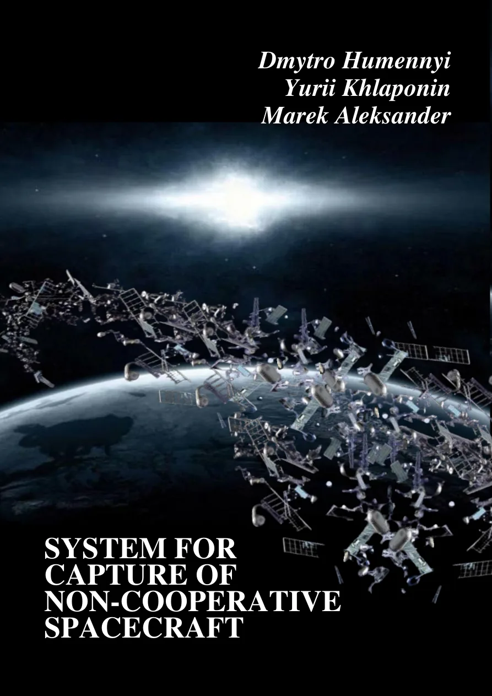
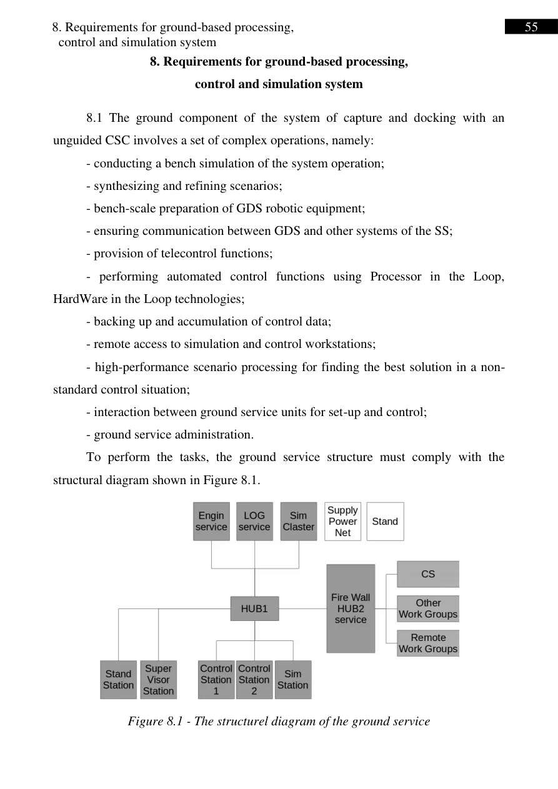

Monografie
Wie kann ein Roboter ein Raumfahrzeug greifen, das beim Docken nicht kooperiert? Die Monografie betrachtet Greifmechanik, Regelungsarchitektur und bodengebundene Simulation.

System for Capture of Non-cooperative Spacecraft. Analysis and Design
Autoren: Dmytro Humennyi, Yurii Khlaponin, Marek Aleksander. Verlag: Vocational Training Center, Nowy Sącz. Das Buch behandelt das Greifen nicht-kooperativer Satelliten, Manipulatorentwurf, Betriebsarten, Bodentests und Zeit- sowie Energiebudgets.
Das Repositorium datiert den bibliografischen Eintrag auf 2022; andere Kataloge nennen 2023. ISBN 978-83-922854-3-4. Amazon-Link vom Autor bereitgestellt; Preis und Verfügbarkeit nicht geprüft.
Problem
Greifen eines Satelliten ohne garantierte Andockstellen bei unsicherer Lage, begrenztem Arbeitsraum und mechanischen Übergangsprozessen.
Ansatz
Anthropomorphe und teleskopische Manipulatoren, Greifer, Sensoren, Greifsteuerung, Betriebsabläufe und Bodenprüfarchitektur.
Bezug zu Væringjar II
Eine frühe technische Grundlage: unvorhergesehene Zustände, begrenzte Ressourcen, betriebsartenabhängige Regelung und Überprüfung der Entscheidung.
